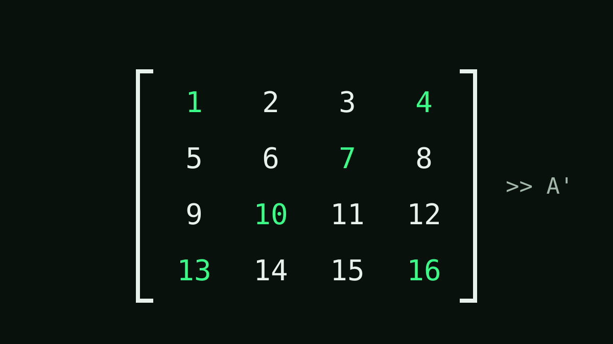

MATLAB Öğretim Aracı
MATLAB'e girişi yanlış ve doğru örnekleri yan yana göstererek anlatan sunum aracı.
Herkese açık repo veya demo yok

Genel bakış
Ekran paylaşarak MATLAB anlatırken kullanılmak üzere hazırlandı. Karşı taraf komutları kendi MATLAB'ine yazar, araç da her adımda sonucun nedenini açar.
Öne çıkan özellikler
- 14 konu ve 45 yanlış/doğru örnek çifti
- Soru → yanlış kod → çıktı → açıklama → doğru kod → kural sırasıyla aşamalı anlatım
- Klavye ile ilerleme ve plansız sorular için küçük komut penceresi simülatörü